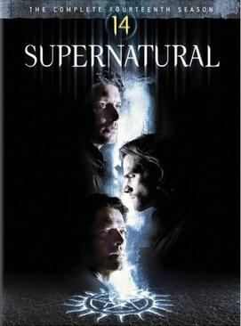
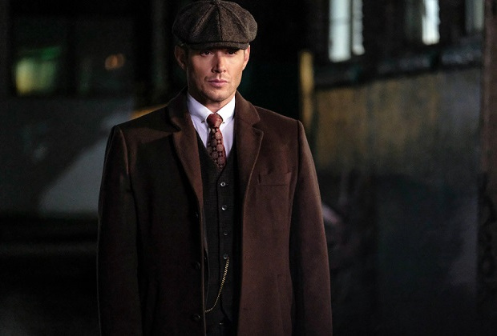
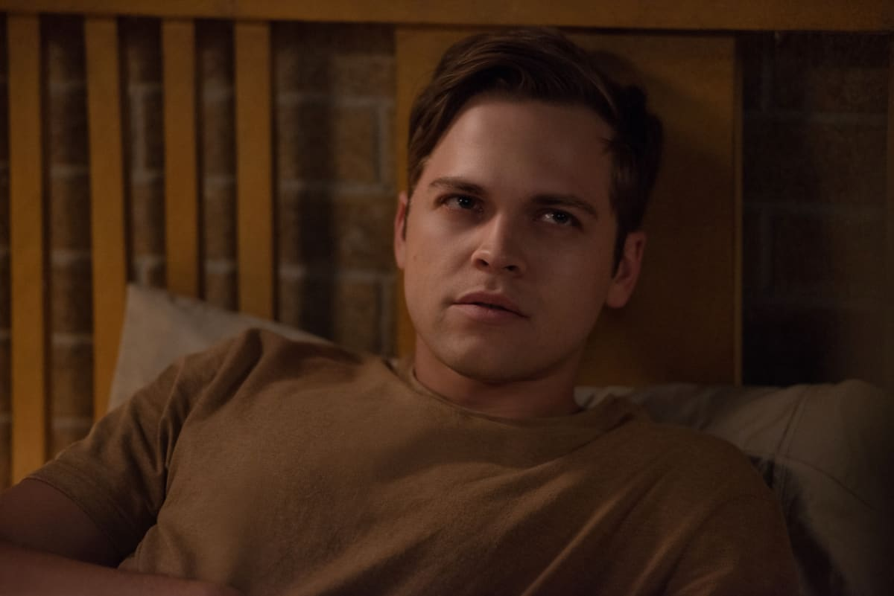
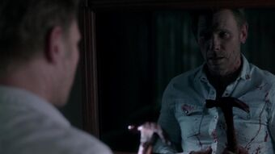
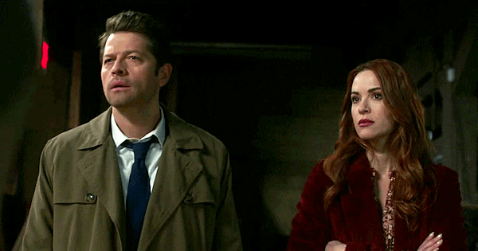
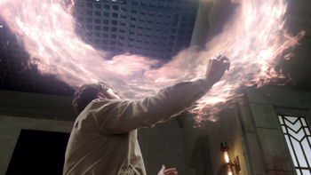
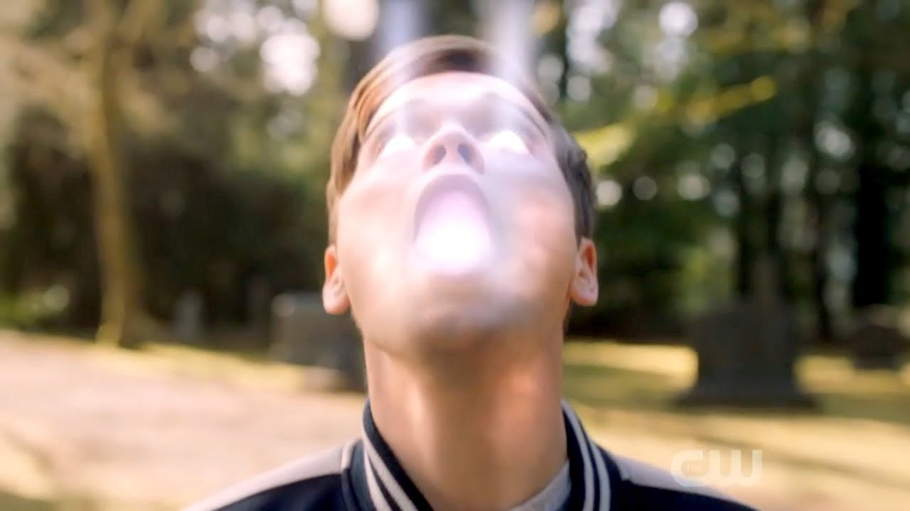

Temporada 14

Sam pede ajuda a todos para tentar rastrear Dean, que pode literalmente estar em qualquer lugar. Enquanto isso, Castiel pode estar em cima de sua cabeça depois de se encontrar com uma fonte não confiável. Depois de ser drenado de sua graça na temporada 13, Jack está se adaptando à vida como um humano, aprendendo novas habilidades e descobrindo como ele se encaixa nesse mundo de caçadores. Sam encontra uma pista sobre o paradeiro de Dean, então ele, Mary e Bobby decidem investigar. Castiel transmite alguns conselhos sábios para Jack, que, ainda desesperado por pertencer, procura uma conexão familiar.


Sam e Castiel perseguem um Xamã, que pode ser capaz de ajudar um amigo. Nick continua em um caminho escuro enquanto procura respostas em torno das mortes de sua esposa e filho. Jack procura Dean para ajudar a aproveitar a experiência humana. Miguel recuperou o controle de Dean enquanto seu exército de monstros continua se aproximando de nossos heróis. Sam elabora um plano para tentar alcançar Dean e parar Miguel antes que mais alguém tenha que morrer. Mary está preocupada com o bem-estar de Jack, e Castiel pede ajuda a Anael para encontrar um milagre.


Sem seus poderes, Jack utiliza a sua alma para fazer uso de magia. Ele consegue matar Miguel, mas, para isso, queimou todo o restante da sua alma. Mary tenta ajudar Jack durante uma crise em que ele perdeu o controle de seus poderes, mas ela foi atingida e acaba não resistindo. Para conter Jack, os rapazes tem a ideia de usar um caixa Mal'ak, usada para conter anjos. Mas pelo fato de Jack ser mais poderoso, ele consegue sair e a decepção e raiva tomam conta do nefilim, que foge. Chuck cria uma arma que seria capaz de matar Jack, mas o usuário teria o mesmo destino. Logo Sam e Dean descobrem que tudo é uma manipulação de Chuck para o fim da história perfeita. Ao perceber isso Sam atira em Chuck e também leva o dano. Decidido a acabar com a história de uma vez, Chuck mata Jack e começa o fim do mundo mais uma vez.

